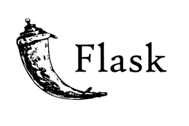

My Story
I work as a Software Engineer (ML) at SEI investments since August 2023 at the AI initiatives team. I hold a Masters in Computer science, with a concentration in machine learning from NYU Courant institute of mathematical sciences (which I completed in May 2023) and an undergrad degree in computer science from Delhi college of Engineering (which I completed in 2021). I have relevant internship experience working at Intel, Optum and various research labs. I have taken part in verious hackathons, optum stratethon, CERN webfest to name a few. I have had my work published in various conferences (see resume for details). I have won various accolades such as International Maths Olympiad, Nutanix women in tech award, National talent search examination (NTSE scholar). It was the excitement of uncharted territories that propelled me to pursue a career in technology, with a vision to solve real world problems and be a part of the development of impactful, scalable and sustainable solutions. That is, as the japanese like to call it my ikigai.
Languages
My favorite languages for machine learning, software engineering, and data science.
Web development
My preferred technologies for web development and database.
Machine learning toolkit


My preferred technologies for machine learning and its applications.
Tools
My favorite tools for version control, code editing, and container orchestration.